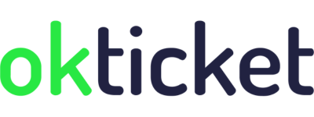
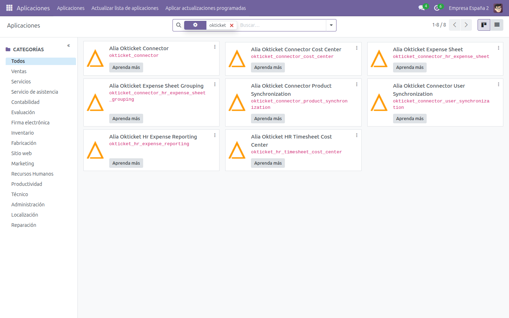
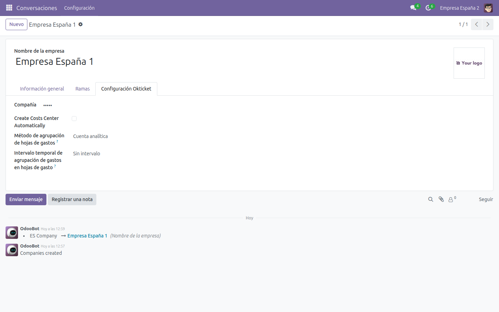
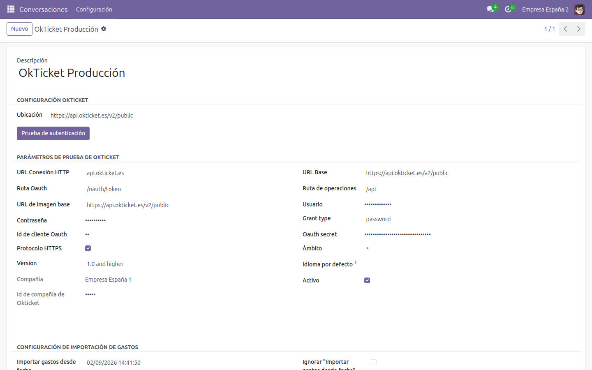
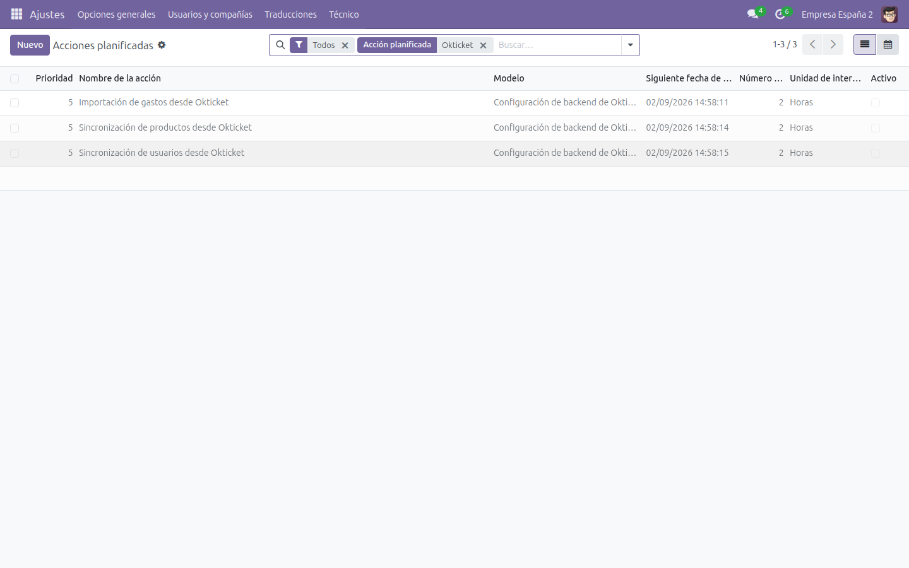
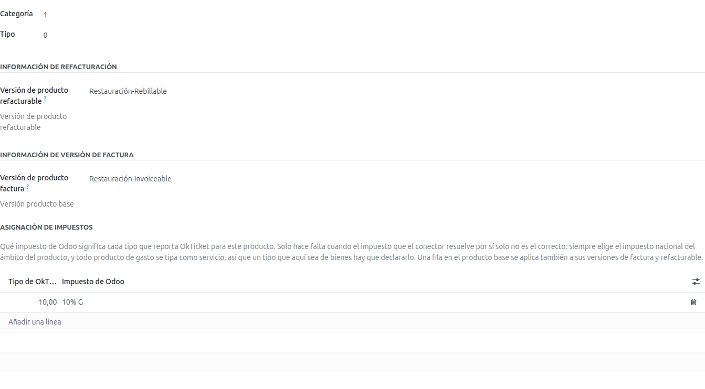
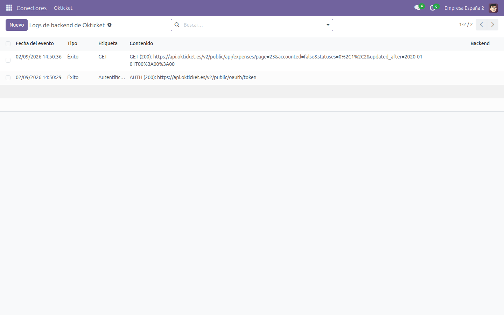

Manual técnico
Instalación, dependencias, configuración del conector y planificación de las sincronizaciones.
El conector sincroniza OkTicket → Odoo los gastos que los empleados registran desde la aplicación móvil, junto con sus usuarios y el catálogo de categorías. Los gastos importados se agrupan en hojas de gasto, cuyos estados se mantienen sincronizados con OkTicket. En sentido inverso, Odoo → OkTicket, publica los centros de coste creados a partir de cuentas analíticas.
Está construido sobre el framework connector de la OCA: cada entidad de OkTicket tiene en Odoo un modelo binding que guarda la correspondencia entre el registro local y su identificador remoto.
| Módulo | Qué aporta | Binding |
|---|---|---|
okticket_connector |
Base del conector: backend, cliente HTTP, log de eventos e importación de gastos. | okticket.hr.expense |
okticket_connector_user_synchronization |
Importa los usuarios de OkTicket y los empareja con empleados por correo electrónico. | okticket.hr.employee |
okticket_connector_product_synchronization |
Importa el árbol de categorías de OkTicket como productos de gasto. | okticket.product.template |
okticket_connector_cost_center |
Publica cuentas analíticas de Odoo como centros de coste en OkTicket. | okticket.account.analytic.account |
okticket_connector_hr_expense_sheet |
Agrupa los gastos importados en hojas de gasto y sincroniza sus estados con OkTicket. | — |
okticket_connector_hr_expense_sheet_grouping |
Añade los métodos de agrupación de gastos en hojas (cuenta analítica, estándar, individual o sin agrupar). | — |
okticket_hr_expense_reporting |
Genera informes PDF de gastos y hojas de gasto con las imágenes de los recibos. | — |
okticket_hr_timesheet_cost_center |
Evita que el proyecto que Odoo crea automáticamente con cada compañía dispare una sincronización espuria. Opcional. | — |
api.okticket.es (o apipre.okticket.es en
preproducción). Si Odoo corre tras un proxy con lista blanca, hay que autorizar ese host.OkTicket es un producto español y devuelve los tipos de IVA españoles. Conviene que la compañía
tenga instalada la localización española (l10n_es) con su plan contable aplicado, y que existan
los impuestos de compra al 0 %, 4 %, 10 % y 21 %, además de un diario de compras. Sin ellos,
los gastos importados recaen siempre en el impuesto por defecto del producto.
El repositorio mantiene una rama por versión de Odoo. Para 18.0:
git clone --branch 18.0 https://github.com/Alialabs/connector-okticket.git
Ambos repositorios en su rama 18.0:
| Repositorio | Módulos que aporta |
|---|---|
OCA/connector |
connector, component, component_event |
OCA/queue |
queue_job |
hr, hr_expense, hr_timesheet, sale_expense, sale_timesheet, product, uom y
analytic. El módulo de centros de coste usa además project.
Una sola, declarada en requirements.txt: cachetools==3.1.1.
Nota En despliegues Docker/Doodba va en odoo/custom/dependencies/pip.txt, no instalada en caliente
dentro del contenedor.
Con las rutas ya en addons_path y el servicio reiniciado, los módulos aparecen buscando
okticket en la lista de aplicaciones.
Nota Ninguno de los módulos declara application: True, así que hay que quitar el filtro
«Aplicaciones» del buscador para que aparezcan.

Qué instalar según el alcance:
okticket_connector — obligatorio.okticket_connector_user_synchronization y okticket_connector_product_synchronization —
necesarios para que la importación de gastos encuentre empleado y producto.okticket_connector_hr_expense_sheet y okticket_connector_hr_expense_sheet_grouping — para
agrupar los gastos en hojas de gasto y sincronizar sus estados.okticket_hr_expense_reporting — para los informes PDF con las imágenes de los recibos.okticket_connector_cost_center — solo si vas a publicar centros de coste.odoo -d <base_de_datos> --stop-after-init \
-i okticket_connector,okticket_connector_user_synchronization,\
okticket_connector_product_synchronization,okticket_connector_cost_center,\
okticket_connector_hr_expense_sheet,okticket_connector_hr_expense_sheet_grouping,\
okticket_hr_expense_reporting
El módulo okticket_hr_timesheet_cost_center es opcional; instálalo solo si vas a crear compañías
nuevas con hr_timesheet.
Atención La importación de gastos necesita que usuarios y productos ya estén sincronizados. Un gasto cuyo empleado o producto no se resuelva se descarta silenciosamente. Ejecuta siempre en el orden Usuarios → Productos → Gastos.
El conector define dos grupos, y los parámetros de conexión del backend solo son visibles para quien pertenece a ellos. Un administrador recién creado no los ve.
| Grupo | Referencia | Permite |
|---|---|---|
| OkTicket / User | okticket_connector.group_okticket_conn_user |
Ver el menú OkTicket, los backends, los logs y los bindings, y lanzar la prueba de autenticación. |
| OkTicket / Manager | okticket_connector.group_okticket_conn_manager |
Además, crear y modificar backends. |
Asigna el grupo desde Ajustes → Usuarios y compañías → Usuarios. Si acabas de cambiar los grupos y la ficha del backend sigue apareciendo incompleta, cierra y reabre la sesión: el cliente web cachea la definición de las vistas.
Cada compañía de Odoo que vaya a sincronizar necesita su identificador de OkTicket. En Ajustes → Usuarios y compañías → Compañías, abre la compañía y ve a la pestaña Configuración Okticket.

| Campo | Descripción |
|---|---|
| Compañía | Identificador numérico que facilita OkTicket. Sin él la importación descarta todos los gastos, porque no puede resolver a qué compañía pertenecen. |
| Crear centro de coste automáticamente (en la interfaz, Create Costs Center Automatically) | Si está activo, al crear un proyecto en Odoo se publica automáticamente su cuenta analítica como centro de coste en OkTicket. |
| Método de agrupación de hojas de gastos | Cómo se reúnen los gastos importados en hojas: por cuenta analítica, estándar, hoja individual o sin agrupar. |
| Intervalo temporal de agrupación | Ventana temporal con la que se agrupan los gastos en cada hoja: sin intervalo, semanal, quincenal o mensual. |
El backend guarda los datos de conexión con la API. Hay uno por compañía. Se crea desde Conectores → Okticket → Backend de Okticket.

| Campo | Valor de producción | Comentario |
|---|---|---|
| URL Conexión HTTP | api.okticket.es |
Solo el host. |
| URL Base | https://api.okticket.es/v2/public |
|
| URL de imagen base | https://api.okticket.es/v2/public |
Descarga de tickets y PDF. |
| Ruta Oauth | /oauth/token |
|
| Ruta de operaciones | /api |
|
| Grant type | password |
|
| Ámbito | * |
|
| Version | 1.0 and higher |
Campo obligatorio; hay que seleccionarlo o el guardado falla. |
| Protocolo HTTPS | Activado | |
| Usuario / Contraseña | — | Credenciales del cliente. Las facilita OkTicket. |
| Id de cliente Oauth / Oauth secret | — | Credenciales del cliente. Las facilita OkTicket. |
Los parámetros técnicos vienen rellenos por defecto al crear un backend nuevo: en la práctica solo
hay que introducir las cuatro credenciales, seleccionar la versión y asignar la compañía. Para
apuntar a preproducción, sustituye api.okticket.es por apipre.okticket.es en los cuatro valores
de URL.
| Campo | Efecto |
|---|---|
| Importar gastos desde fecha | Marca de la última importación. El conector la actualiza solo y pide a la API únicamente lo modificado después. |
| Ignorar «Importar gastos desde fecha» | Desactiva el filtro incremental y reimporta el conjunto completo. Útil en la primera carga o para rehacer una importación. |
| Importar solo gastos revisados | Restringe la importación a los gastos marcados como revisados en OkTicket. |
El botón Prueba de autenticación pide un token a la API con las credenciales guardadas. Si todo es correcto aparece una notificación verde de conexión correcta. Si falla, revisa usuario, contraseña, client id, secreto y la conectividad de salida hacia el host.
Atención Las credenciales de la API son secretos de producción. No las escribas en documentación, capturas ni ficheros versionados: guárdalas únicamente en el backend de Odoo.
El conector instala tres acciones planificadas, todas sobre el modelo okticket.backend y con un
intervalo por defecto de 2 horas.
Atención Los tres crons se instalan desactivados a propósito, para que una instalación nueva no empiece a sincronizar antes de estar configurada. Hay que activarlos explícitamente cuando la prueba de autenticación funcione.

| Orden | Acción | Método |
|---|---|---|
| 1 | Sincronización de usuarios desde Okticket | _scheduler_import_employee() |
| 2 | Sincronización de productos desde Okticket | _scheduler_synchronize_products() |
| 3 | Importación de gastos desde Okticket | _scheduler_import_expenses() |
Para la primera carga, ejecuta las tres manualmente en ese orden con Ejecutar manualmente. La importación de gastos recorre la API paginada y confirma al final, de modo que consultar la tabla a mitad del proceso devuelve cero legítimamente: espera a que termine antes de dar nada por fallido.
OkTicket no envía un impuesto: envía un porcentaje. En el desglose taxes de cada
ticket, cada entrada lleva el tipo (p) y su base (b), y solo las de base mayor que cero
describen el recibo. Traducir ese porcentaje a un impuesto concreto de Odoo no tiene una respuesta
única: un plan contable español trae doce impuestos de compra por cada tipo. Para el 10 %
conviven, entre otros, 10% G (bienes), 10% IG (bienes de inversión), 10% S (servicios) y
las variantes intracomunitaria, de importación y de inversión del sujeto pasivo.
Elegir mal no produce ningún error: produce un IVA equivocado. Y en un caso concreto produce cero, porque las variantes extracomunitarias reparten +100 % al IVA soportado y −100 % al repercutido, se anulan entre sí, y el gasto queda con la base igual al total y sin cuota deducible.
Cuatro pasos, del más explícito al más deducido. Ninguno recae en «el primero que devuelva la base de datos».
| Paso | Criterio |
|---|---|
| 1 | La tabla de impuestos del producto, o la del producto base del que deriva. Es configuración explícita y gana siempre. |
| 2 | Un impuesto que el producto ya lleve en Impuestos de proveedor con ese mismo tipo. |
| 3 | Desambiguación estructural: se conserva el impuesto nacional del ámbito del producto. |
| 4 | Si aún quedan varios candidatos, el gasto se importa sin impuesto y se registra un aviso nombrándolos. |
El paso 3 aplica dos criterios objetivos, sin comparar nombres. Primero conserva los impuestos que
alguna posición fiscal declara como origen (tax_src_id), que son los nacionales: las variantes
solo aparecen como destino, porque se alcanzan traduciendo el nacional. Después filtra por
ámbito (tax_scope), que distingue bienes de servicios. En un plan español eso deja exactamente
un candidato para el 4 %, el 10 % y el 21 %.
Si la localización no trae posiciones fiscales, el primer criterio no puede aplicarse y es más probable terminar en el paso 4. Ahí es donde hace falta la tabla del producto.
Está en la pestaña Configuración Okticket de cada producto de gasto, bajo Asignación de impuestos. Cada fila declara qué impuesto de Odoo corresponde a un tipo que reporta OkTicket.

| Columna | Contenido |
|---|---|
| Tipo de OkTicket (%) | El porcentaje tal como lo reporta OkTicket. El 0 % es un tipo válido y no equivale a no tener fila. |
| Impuesto de Odoo | El impuesto de compra que le corresponde, de la compañía de la fila. |
| Compañía | Oculta por defecto; se muestra desde el selector de columnas. Los impuestos son por compañía, así que en multi-compañía hace falta una fila por cada una. |
Una fila declarada en el producto base se aplica también a sus versiones -Factura y -Refacturable, de modo que la decisión se toma una vez por categoría en lugar de tres veces.
Importante El paso 3 solo puede llegar al impuesto de servicios, porque el conector tipa todos los productos de gasto como servicio. Si en tu caso un tipo corresponde a bienes, hay que declararlo en esta tabla: no hay ningún otro sitio del modelo donde quepa esa información.
No hay que rellenarla para que la instalación funcione. Con un plan español y ninguna fila, el paso 3 resuelve el 4 %, el 10 % y el 21 % al impuesto nacional de servicios, que es la respuesta correcta para la mayoría de los productos de gasto. La tabla existe para las excepciones.
Atención Actualizar el módulo no recalcula los gastos ya importados. Un gasto solo cambia de impuesto
cuando la importación vuelve a tocarlo, y eso ocurre únicamente si la API sigue devolviéndolo: los
que ya están marcados como contabilizados en OkTicket quedan fuera del filtro accounted=false y
conservan el impuesto con el que entraron. Si además su asiento ya está asentado, la corrección es
contable y no técnica.
Los gastos importados no quedan sueltos: el conector los reúne en hojas de gasto
(hr.expense.sheet) y mantiene sus estados alineados con OkTicket.
Al terminar la importación, cada gasto nuevo se coloca en una hoja según el método de agrupación y el intervalo temporal configurados en la compañía (sección 7):
La agrupación solo reutiliza hojas en estado borrador. Si la hoja que correspondería a un grupo ya está enviada o aprobada, se crea una hoja nueva en borrador con el mismo nombre base y un sufijo numérico, en lugar de añadir el gasto a la hoja ya tramitada.
Cuando una hoja avanza en Odoo, el conector lo refleja en OkTicket:
Nota La sincronización de estados escribe un gasto a la vez en OkTicket, dentro de una única transacción por backend. En hojas con muchos gastos la operación puede tardar varios segundos; es normal y no indica un fallo.
El módulo okticket_hr_expense_reporting genera informes PDF de gastos y hojas de gasto
incorporando las imágenes de los recibos.
Es la única sincronización que va de Odoo hacia OkTicket, y la aporta el módulo
okticket_connector_cost_center. Lo que se publica es una cuenta analítica
(account.analytic.account), no un proyecto: el proyecto solo interviene como disparador de la
variante automática.
El módulo registra un ir.actions.server anclado a la vista lista de
account.analytic.account. Aparece en el menú Acciones al seleccionar uno o varios registros, y
abre el asistente analytic.cost.center.wizard, que confirma antes de escribir en OkTicket.
Su comportamiento:
okticket_bind_ids), de modo que relanzar la acción
es idempotente.ValidationError y
obliga a procesarlas de una en una.Con Autocrear centro de coste del proyecto activo en la compañía, un listener sobre
project.project llama a _okticket_create() sobre la cuenta analítica del proyecto en cuanto
este se crea. Renombrar el proyecto propaga el nuevo nombre; archivarlo desactiva el centro de
coste, y borrarlo lo elimina en OkTicket.
Nota El proyecto debe tener compañía asignada para que se dispare la publicación: la cuenta
analítica hereda de ella la opción de autocreación. El módulo opcional
okticket_hr_timesheet_cost_center existe precisamente para que el proyecto que Odoo crea de
oficio al dar de alta una compañía con hr_timesheet no dispare esta publicación.
Cuando un gasto de OkTicket llega imputado a un centro de coste que se originó en Odoo, la importación fija su cuenta analítica al 100 % en el gasto. Los centros de coste creados directamente en OkTicket no tienen correspondencia en Odoo y, por tanto, no fijan analítica.
El conector soporta varias compañías simultáneamente. El esquema es:
company.Los productos, en cambio, son compartidos: si dos compañías de OkTicket exponen el mismo árbol de categorías, ambas apuntarán a las mismas plantillas de producto en Odoo.
Cada llamada a la API queda registrada en Conectores → Okticket → Logs, con su tipo (Éxito, Aviso, Error), la etiqueta de la operación y la URL con el código de respuesta.

Es el primer sitio donde mirar cuando una sincronización no produce lo esperado. Una importación sana no deja ninguna entrada de tipo Error; los avisos habituales corresponden a gastos con varios tipos de IVA, que el conector importa con el impuesto por defecto del producto para que se revisen a mano.
| Síntoma | Causa habitual | Solución |
|---|---|---|
| La ficha del backend no muestra los parámetros de conexión. | El usuario no pertenece a los grupos del conector, o la sesión tiene la vista cacheada. | Asignar el grupo OkTicket / Manager y volver a iniciar sesión. |
| El backend no se guarda y el campo Version aparece en rojo. | Version es obligatorio y no viene preseleccionado. | Seleccionar 1.0 and higher y guardar. |
| La importación termina sin errores pero no aparece ningún gasto. | Falta el identificador de compañía, o no se han sincronizado antes usuarios y productos. | Rellenar Compañía en la pestaña OkTicket y ejecutar los crons en orden. |
| La prueba de autenticación falla. | Credenciales incorrectas o salida HTTPS bloqueada. | Verificar las cuatro credenciales y el acceso a api.okticket.es desde el servidor. |
| Los gastos entran con un impuesto que no corresponde. | O la compañía no tiene el plan contable español con los tipos 0/4/10/21 de compra, o ese porcentaje debe resolverse a un impuesto distinto del que elige el conector. | Instalar l10n_es y aplicar el plan a la compañía; si el plan ya está, declarar el tipo en la tabla Asignación de impuestos del producto (§10). |
| El log avisa de que un tipo coincide con varios impuestos y el gasto entra sin impuesto. | El plan contable tiene varias opciones para ese porcentaje y ninguna se puede distinguir estructuralmente (falta de posiciones fiscales, o varios impuestos del mismo ámbito). | Declarar la fila correspondiente en la tabla Asignación de impuestos del producto. Ver §10. |
| Un gasto nuevo crea una hoja repetida en vez de sumarse a la existente. | La hoja de ese grupo ya no está en borrador (está enviada o aprobada). | Es el comportamiento esperado: la agrupación solo reutiliza hojas en borrador. |
| Se repite la importación completa en cada ejecución. | Ignorar «Importar gastos desde fecha» está activo. | Desactivarlo una vez hecha la carga inicial. |